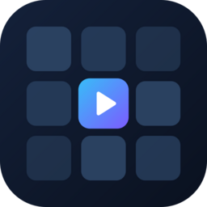
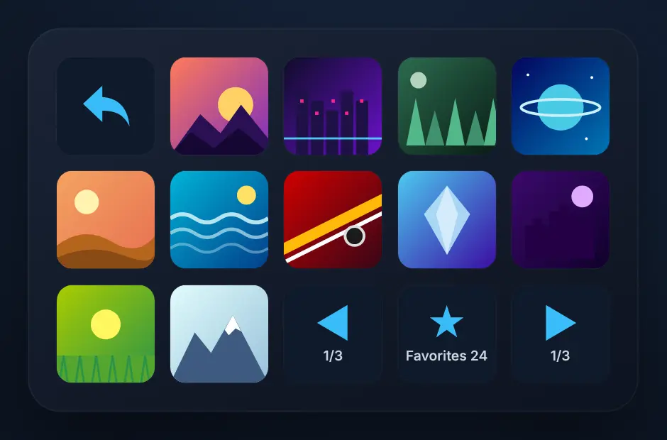
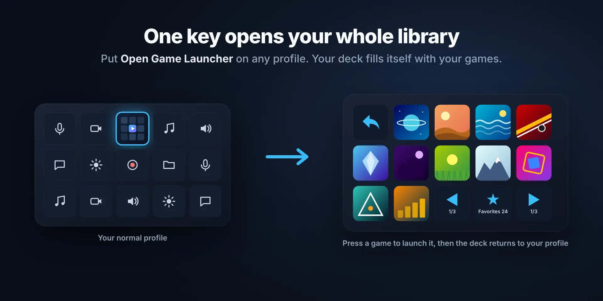
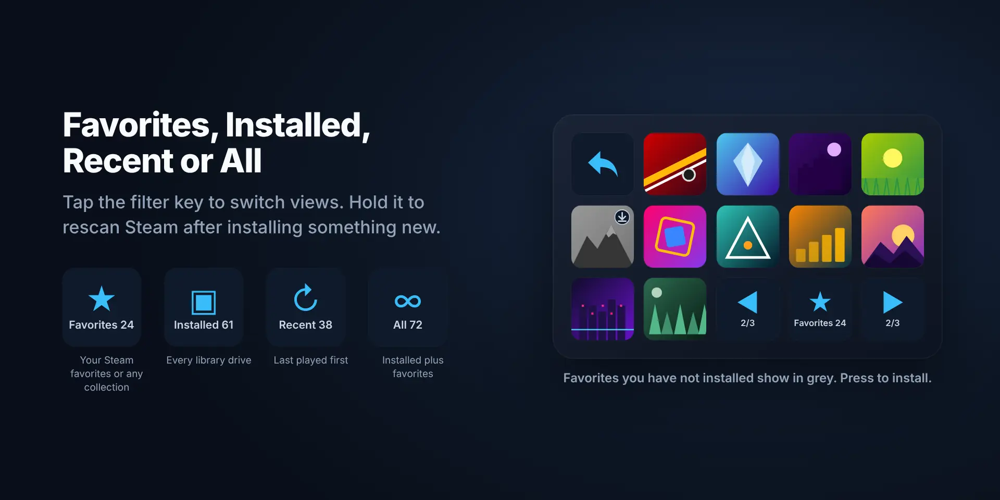
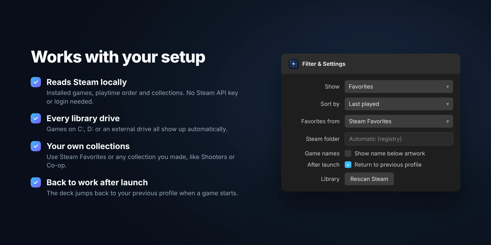

Game Launcher for Steam
A free Stream Deck plugin. One key fills your whole deck with your Steam favorites, installed or recently played games. Press a game to launch it.
Coming to the Elgato Marketplace soon.

What it does
Like Elgato's own audio mixer: press one key and your deck turns into your game library. Everything is read locally from Steam.
One key, whole deck
Opens a bundled profile that fills itself with your games and artwork.
Four views
Favorites, Installed, Recently played or All. Tap the filter key to switch.
Your collections
Use Steam Favorites or any collection you made yourself, like Shooters or Co-op.
Every library drive
Games on C:, D: or an external drive all show up automatically.
Back after launch
The deck returns to your previous profile once a game starts. Optional.
Not installed?
Favorites you have not installed show in grey. Press one to install it.



Install
Takes about a minute.
- Download the plugin file above and double-click it. The Stream Deck app installs it.
- Drag "Open Game Launcher" from the Game Launcher for Steam category onto any key.
- Press it. The first time, Stream Deck asks to install the included profile: choose yes.
- Pick a game. Use the filter key to switch views and the arrows to page through your library.
FAQ
Do I need a Steam API key or to log in?
No. The plugin reads your installed games, playtime order and collections from your own Steam folder. Only for favorites that are not installed does it ask the public Steam Store for the name and artwork.
Which Stream Decks are supported?
The bundled profile exists for Stream Deck (15 keys), Stream Deck Mini and Stream Deck XL. On other devices you can place the Game Slot, Previous, Next and Filter actions yourself; slots fill left to right, top to bottom.
A new favorite or game does not show up.
Steam sometimes saves collections a little later. Hold the filter key for a second to rescan, or use "Rescan Steam" in the settings.
Steam is installed in an unusual place.
Select the filter key in the Stream Deck app and fill in the Steam folder, for example D:\Steam.
Is it on macOS?
Not yet. It is built and tested for Windows only.
What data does it collect?
None. No analytics or tracking. See the privacy policy.